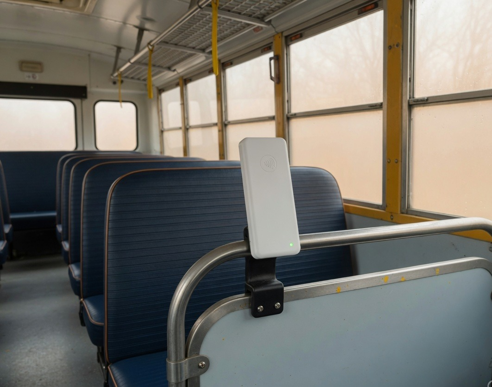
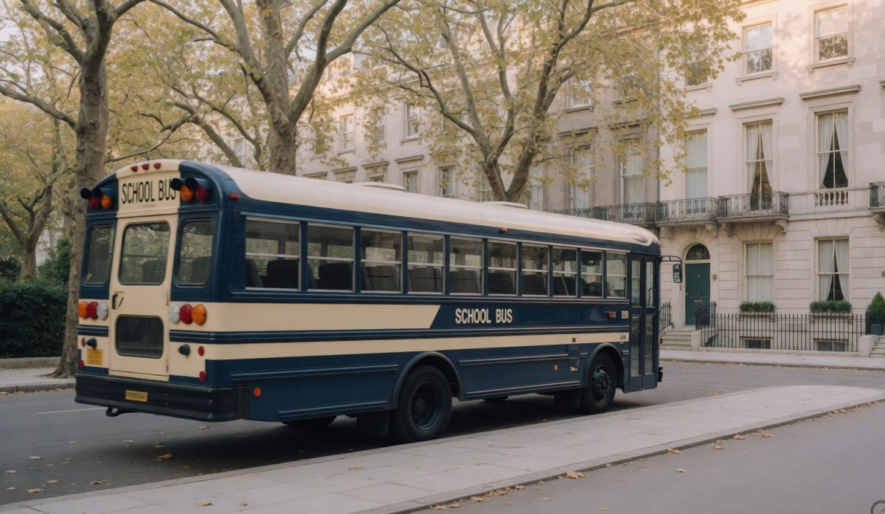
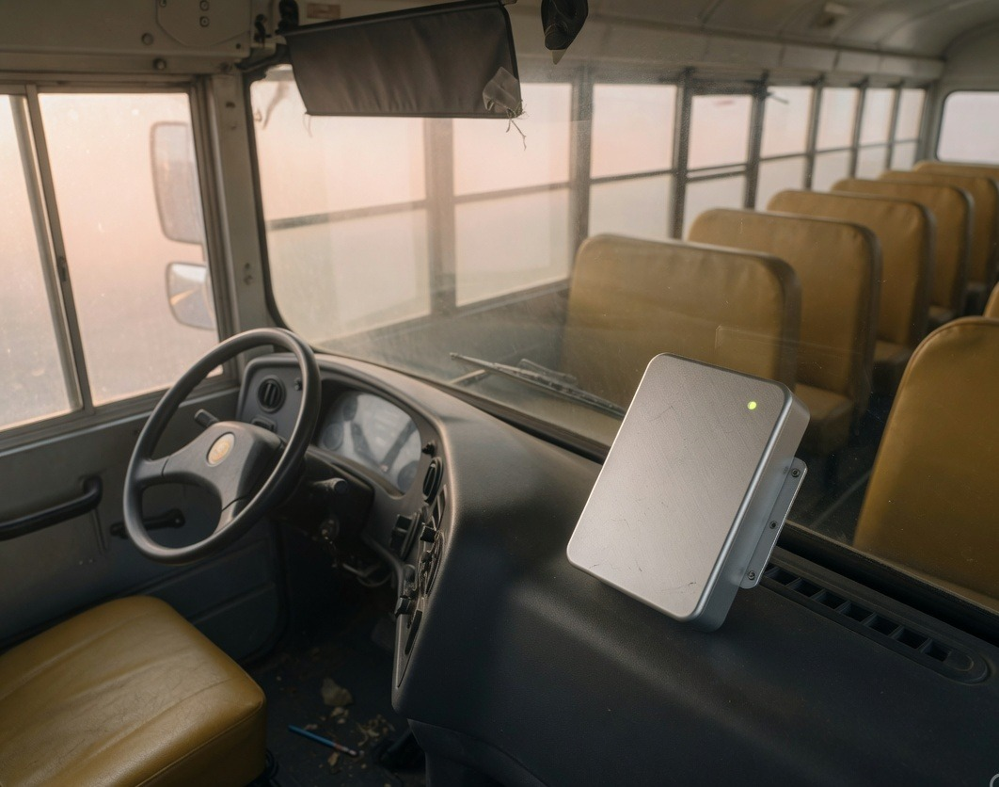
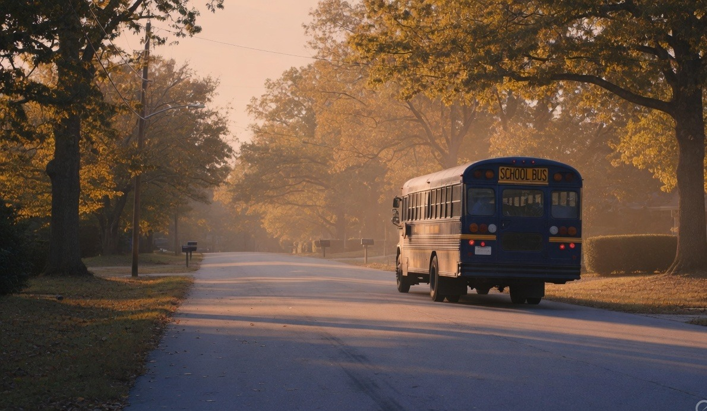
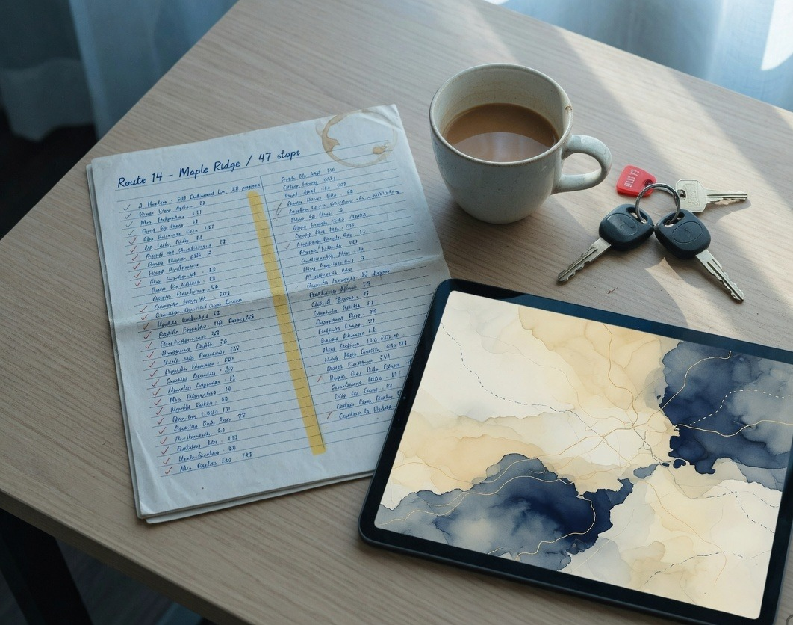
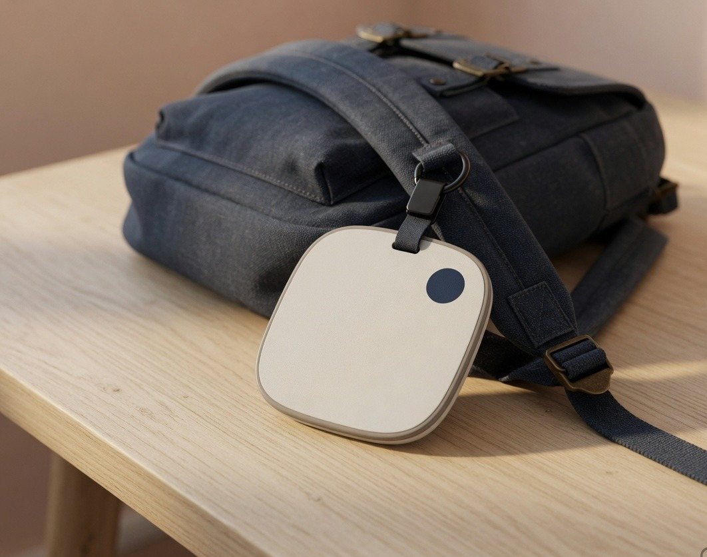

1. Board
Student taps the bag tag on the bus reader. Boarding is logged against the route, the bus, and the time.
Attendly · Smart Ride
The student taps the bag tag when they board. Parents see the bus live, get a push at pickup and drop, and know when their stop is two minutes away.

How it works
The same NFC tag used at the school gate works on the bus. GPS fills the minutes in between.

Student taps the bag tag on the bus reader. Boarding is logged against the route, the bus, and the time.

A 4G GPS unit on the bus sends location every few seconds. Parents and the school share the same live map.
FCM push when they board, when the bus is two minutes from the stop, and when they tap off at school.


Devices we deliver
The bag tag is the same one used for gate attendance. The bus gets a reader and a GPS unit.

One tag for the bus and the school gate. No battery. Assigned to one student.
Handrail-mounted tap. LED confirms boarding. In/out is written to the trip roster.
Live location for the parent map and the transport desk. Refresh about every 5 seconds.
Live tracking
A live map, an ETA, and a quiet push before the bus reaches the stop. No “where is the bus?” calls.
Software
Parents, the driver, and the transport desk each get the view they need — from the same tap and the same GPS ping.
Live bus map · ETA · boarded / alighted FCM push · 2-minute-to-stop alert · multi-child · leave request · call the attendant
Today’s roster · navigation · in/out from the tap · missed-student flag · wrong-direction alert · SOS to the desk
All buses on one map · visit / missed stops · speed and off-route alerts · change bus or stop · daily trip report
A push when they board. A map while they ride. Another push when the stop is close — and when they tap off at school.
Every bus, every tap, every missed stop. Speed and off-route events land here first.
Alerts
Parents get the three messages that matter. Staff get the ones that keep the route safe.
Reference
Bus, reader, GPS, and the desk that watches the fleet.
One tag
Attendly Ride and Attendly Gate share the same NFC tag. Board the bus, tap at school — parents get both stories.
FAQ
For principals, transport coordinators, and parents.
Attendly Ride is school-bus tracking built around the same NFC bag tag as Attendly Gate. Students tap when they board and alight. A 4G GPS unit keeps the bus on a live map. Parents get FCM pushes for boarding, approaching the stop, and arrival.
The student holds the bag tag to the reader on the bus handrail. The tap is logged against that trip. If they forget to tap, the driver roster still shows who should be on board so the attendant can mark them.
The GPS unit reports about every 5 seconds on 4G. If the signal dips, the tracker stores points and backfills the route when it reconnects. The parent app shows the last known point until then.
When the student boards, when the bus is about two minutes from their stop, when they tap off at school, and if the bus is running late. Evening last-drop can be confirmed the same way.
No. Ride covers the commute. Gate attendance is a separate page — same tag, school entrance reader. Schools often run both so parents see “boarded the bus” and later “arrived at school.”
The transport console flags a roster name with no boarding tap after the stop window. The desk can call the parent from the console. The parent app can also show “not boarded.”
Book a demo
Tell us your city and bus count. We’ll show the tap, the live map, and the parent push in one short walkthrough.